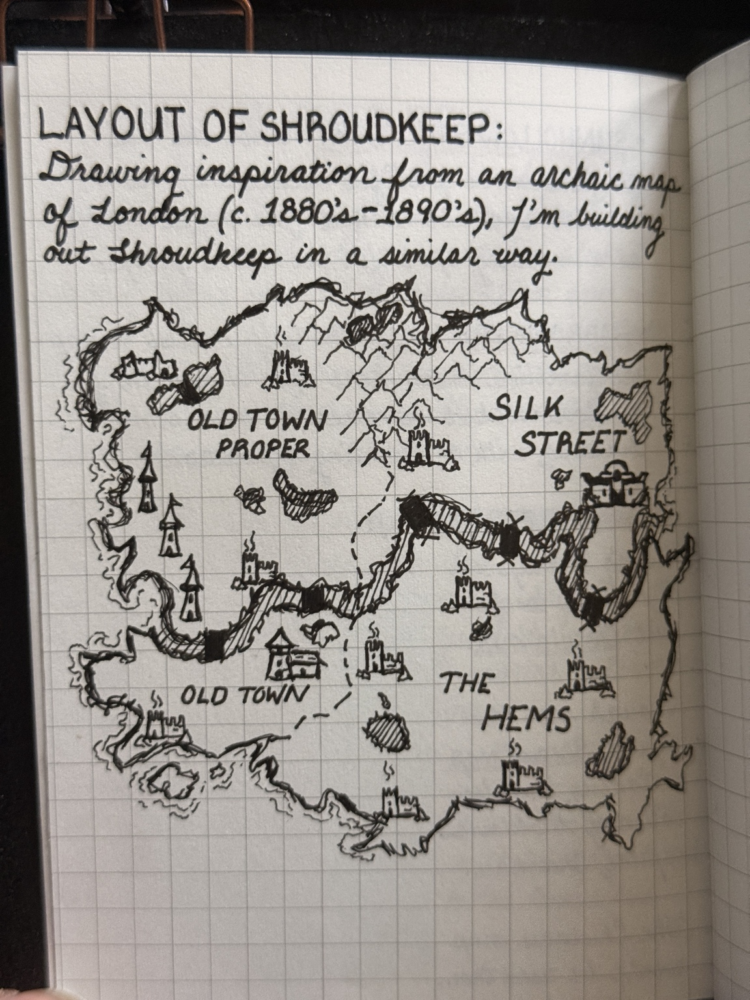
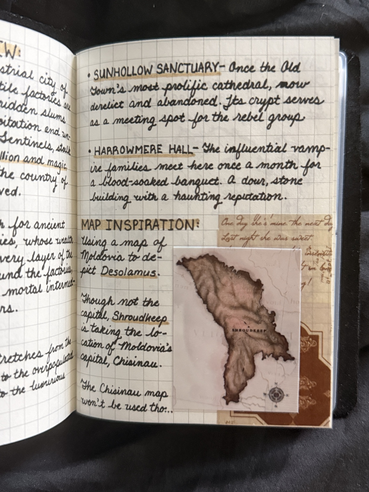

A City Built in Layers
Shroudkeep is not merely divided by streets. It is divided by who may breathe clean air, who may cross a bridge after dusk, and whose death is considered worthy of ink. Select a marked district to read what an ordinary citizen might know before Session One.

Select a marked district
The City Is Watching
Public maps are deliberately incomplete. Whole alleys, tunnels, and tenements vanish whenever the Magistracy finds them inconvenient.
Cartographer's Notebook

The city plan draws from the dense, irregular growth of late-Victorian London: old streets buried beneath newer roads, industrial corridors carved through poorer wards, bridges controlled as checkpoints, and wealth climbing physically away from the smoke.
Session One limitation
Only public knowledge appears here. Safehouses, hidden passages, patrol routes, and secret sites will be added when the party actually discovers them.